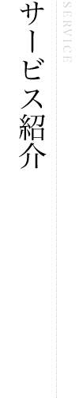
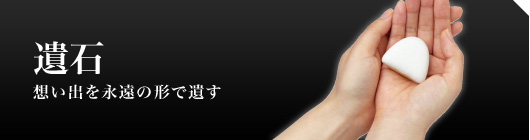
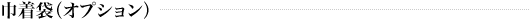
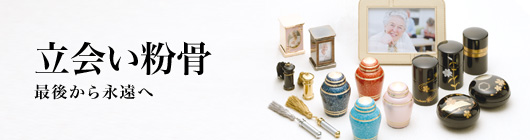
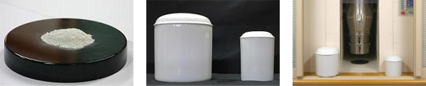
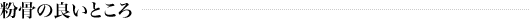
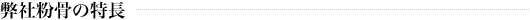
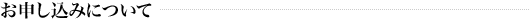
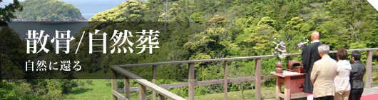
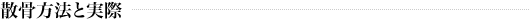

大切な人の想い出を「遺石」と言う形にし永遠のメモリアルとしてお部屋に安置。いつまでも傍に居ることは素晴らしいことです。故人を偲ぶに相応しい、もう一つの供養としてご提案いたします。
これも人それぞれの顔・性格が違うように遺石の色も十人十色で、とても神秘的です。
ご予約の際、ご遺骨の微妙な成分の違いで起こる色の変化があることをあらかじめご了承ください。
| 遺石サイズ | 幅 約45mm×高さ 約45mm |
|---|---|
| 遺骨使用量 | 粉骨 約60g |
| 文字刻印 | ご指定の文字を刻印出来ます |
| 遺石料 | \200,000円（税抜き） |

| 品名 | 巾着袋 |
|---|---|
| 材質 | 塩瀬（日本刺繍付） |
| サイズ | 70mm×100mm |
巾着袋は、故人が愛用していたネクタイ・着物の生地などを当日お持ち頂ければ、巾着袋に仕立てることもできますので、お問い合せ下さい。

「粉骨」の目的は、故人の想い出を永遠のメモリアルとしてさまざまな置き飾りに収めたり、最近「散骨」を行う人が多くなりましたが、この場合ご遺骨をミリ単位にする必要があります。また、納骨堂などをご利用で、限られたスペースに多くのご遺骨を納めたいなど、もう一つの供養としてご提案いたします。
粉骨の過程をみることは、ご遺族様が死を受け入れるための貴重なお時間になるという考えのもと、ニチロ静内でご遺族様お立会いによる粉骨をおこなっております。

粉骨すると、遺骨はほぼパウダー状になり、遺骨量は約3割程度まで減容します。
| 粉骨料 | \30,000円(税抜き)（一体あたり） |
|---|---|
| 所要時間 | 約30分 |
| ご紹介ムービー | 立会い粉骨のご案内ムービーはこちら |
弊社の粉骨サービスが下記の新聞で紹介されています。
＜新聞記事＞
■2004年4月18日 「粉骨の時」遺族で共有(産経新聞)
■2004年4月24日 葬送どうするか広がる選択肢(読売新聞)
■2004年6月03日 増える最期の選択肢(北海道新聞)

ではそもそも粉骨のメリットとは、何でしょうか？粉骨することにより、以下のことが可能となります。
■散骨、自然葬
■収容スペースが限られている納骨堂での孫世代、ひ孫世代までの遺骨収納
■少ないスペースでの自宅安置
■さまざまな形の骨壷へ収納

弊社の粉骨は、国内でも有数の技術により、以下の特長を持っています。
■粉骨時間がかからない
従来、粉骨には１日ほどかかっておりましたが、約30分ほどしかかかりません。
■音が小さい
従来、作業音も大きく、ご遺族様の感情を損なうことが考えられましたが、その心配は要りません。
■微細な粉骨
2ミリ以下の粒子まですることが可能となっています。

■粉骨お申し込み
事前にお電話で「粉骨」のご希望「日時」をお伝えください。
・火葬許可証又は、埋蔵許可証（コピーでも可）
・申込者ご本人と証明できる物（運転免許証、保険証等）
・印鑑（どんな印鑑でも可）をご用意ください。
■粉骨当日
・粉骨所でご遺族又は、委任業者立会いのもと粉骨。
・ご遺骨、証明証、委任状をお預かりします。（ニチロ立会粉骨所で受付）
・粉骨と粉骨証明書のお渡し。（所要時間は、約30分くらいです）
※湿気を含むご遺骨の場合は乾燥処理を行いますので粉骨時間とは別に15分程度お時間をいただきます。

わが国において散骨が始まったのは、「葬送の自由をすすめる会」が平成3年に自然葬として実施してからのことです。
この時、当時の厚生省からは散骨は墓地埋葬等に関する法律・墓地埋葬法の予想した葬法ではない、法務省からは節度をもって行われるならば刑法の遺骨遺棄罪には当たらないと表明されました。
現在では、散骨は刑法の遺骨遺棄罪や墓地埋葬法に反するものではなく、死者を弔う祭祀として国民感情に配慮し節度を以て行うならば、違法ではないとする法解釈が定着してきました。

散骨を行うには、火葬後の遺骨をミリ単位に細かく砕き、粉末状にしたうえで、海では 岸から10km以上はなれた海域に船または飛行機で、山では持ち主の許可のある特定地域内になされなければなりません。
| ご紹介ムービー | 散骨/自然葬のご案内ムービーはこちら |
|---|